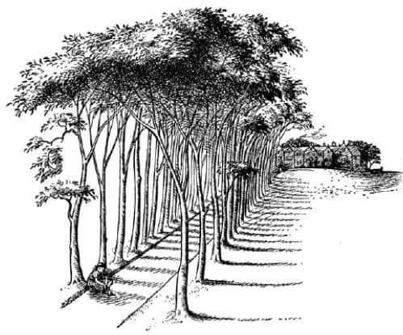
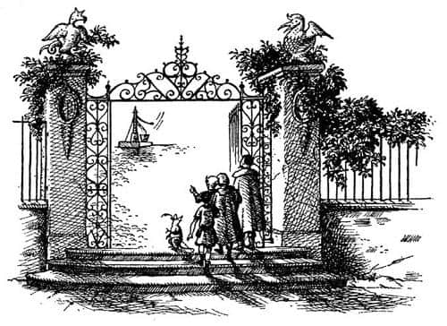

Seslerin Adası
Uzun süredir kuzeybatıdan esen rüzgâr artık batıdan esmeye başlamıştı ve her sabah güneş denizden yükseldiğinde Şafak Yıldızı’nın kavisli pruvası güneşin tam ortasında dikiliyordu. Bazıları güneşin Narnia’dakinden daha büyük olduğunu düşünüyordu, ama diğerleri buna katılmıyordu. Hafif ama sürekli bir rüzgârla uzun süre yol aldılar; ne bir balık gördüler, ne bir martı; ne başka bir gemi ne de bir kara parçası. Erzakları azaldı ve sonsuza uzanan bir denizde yol aldıklarını düşünmeye başladılar. Ama doğuya doğru yolculuğa devam ettikleri takdirde kendilerini riske atacaklarını düşünmeye başladıkları gün, güneşle kendileri arasında bir bulut gibi uzanan alçak bir kara parçası göründü.
Öğleden sonra geniş bir körfezde demirlediler ve karaya çıktılar. Şimdiye kadar gördüklerinden çok farklı bir yerdi. Çünkü kumsalı geçer geçmez her yer terk edilmiş gibi sessiz ve boştu, ama önlerinde on bahçıvanın çalıştığı büyük İngiliz malikanelerinin bahçeleri gibi düzenli ve kısa çimlerle kaplı düzgün bahçeler uzanıyordu. Ağaçlar seyrekti ve oldukça uzaktaydı; ne kırık dallar ne de dökülmüş yapraklar görülüyordu. Zaman zaman öten güvercinlerinkinden başka hiçbir ses yoktu.
Az sonra üzerinde tek bir otun bitmediği ve her iki yanı ağaçlarla kaplı, uzun, düz ve kumluk bir patikaya geldiler. Bu yolun öbür ucunda bir ev görünüyordu; öğle sonrasının donuk ışığında gri ve sessiz görünen, büyük bir evdi bu.

Patikaya adım atar atmaz Lucy ayakkabısının içinde bir taş olduğunu fark etti. Bu bilinmeyen yerde taşı çıkarırken diğerlerine beklemelerini söylemek akıllıca olabilirdi, ama Lucy bir şey demedi; sessizce geride kalıp ayakkabısını çıkarmak için yere oturdu. Bağcıkları düğümlenmişti.
Düğümleri çözdüğünde diğerleri oldukça uzaklaşmıştı. Taşı çıkarıp da ayakkabısını tekrar giydiğinde artık onları duyamıyordu, ama aynı anda başka bir ses duydu. Ses evin bulunduğu yönden gelmiyordu.
Duyduğu şey bir gümleme sesiydi. Sanki düzinelerce güçlü işçi balyozları ellerine almış bütün güçleriyle yere vuruyordu. Ses hızla ona doğru yaklaşıyordu. Lucy sırtını bir ağaca yaslamış oturmaktaydı, bu ağaç tırmanabileceği bir ağaç olmadığından, ölüm sessizliğiyle oturup sırtını ağaca yapıştırmaktan ve görünmemeyi umut etmekten başka yapabileceği bir şey yoktu.
Güm, güm, güm… Bu ses her neyse, artık çok yakında olmalıydı, çünkü yerin sallandığını hissediyordu, ama hiçbir şey göremiyordu. Gelen şeyin – ya da şeylerin – hemen arkasında olduğunu düşünüyordu. O anda hemen önündeki patikada bir gümleme sesi duyuldu. Patikada bir şeyler olduğunu sadece sesten değil, kumların sanki yere güçlü bir darbe vurulmuş gibi dağılmasından da anlamıştı. Henüz darbeyi vuran şeyi göremiyordu. Sonra bütün gümbürtüler bir araya geldi ve aniden durdu.
Gerçekten çok korkunçtu, çünkü hâlâ kimseyi göremiyordu. Parka benzeyen bu toprakların tümü hâlâ ilk karaya çıktıklarındaki gibi sessiz ve boştu. Yine de sadece birkaç metre ilerisinde bir ses konuştu. Şöyle söyledi:
“Arkadaşlar, işte fırsat.”
Anında bir ses topluluğu cevapladı ve “Dinleyin. Dinleyin. İşte fırsat” dediler. “Bravo Reis. Çok haklısın.”
“Ben derim ki” diye devam etti ilk ses, “sahile inip gemileriyle onların arasına girelim. Herkes silahlarını kontrol etsin. Denize açılmaya çalıştıklarında onları yakalarız.”
“Eh, bu doğru” diye bağırdı diğer sesler. “Bundan daha iyi bir plan olamaz Reis. Böyle devam et, bundan daha iyi bir plan yapamazdın.”
“Neşelenin öyleyse arkadaşlar, neşelenin” dedi ilk ses, “gidelim.”
“Yine haklısın Reis” dedi diğerleri. “Harika bir emir bu. Lafı ağzımızdan aldın. Gidelim.”
Gümleme sesleri yine başladı, önceleri çok güçlüydü, sonra gittikçe zayıflayarak deniz yönünde kayboldu.
Lucy, oturup bu görünmez yaratıkların ne olduğunu düşünerek vakit kaybetmeye değmeyeceğini biliyordu. Gümleme sesleri kesilir kesilmez ayağa kalktı ve tüm gücüyle patika boyunca diğerlerinin ardından koştu. Ne pahasına olursa olsun onları uyarmalıydı.
Tüm bunlar olurken diğerleri eve ulaşmışlardı. Güzel renkli taşlardan yapılmış, çok pencereli ve kısmen sarmaşıklarla kaplanmış alçak bir binaydı ve sadece iki katlıydı. Her yer o kadar sakindi ki Eustace, “Sanırım bu ev boş” dedi, ama Caspian evin bacalarından birinden çıkan dumanı işaret etti.
Geniş kapılardan biri açıktı, oradan geçip taş döşeli bir avluya girdiler. Orada, adada garip bir şeyler olduğuna dair ilk belirtileri gördüler. Avlunun ortasında bir tulumba vardı, dibinde de bir kova. Bu hiç de tuhaf değildi. Ancak tulumbanın kolu, başında kimse olmamasına rağmen aşağı yukarı hareket ediyordu.

“Bu işte bir büyü var” dedi Caspian.
“Makineler!” dedi Eustace. “Sonunda uygar bir ülkeye geldiğimizi biliyordum.”
O anda Lucy koşarak avluya girdi, terli ve nefes nefeseydi. Alçak bir sesle, kulak misafiri olduğu konuşmaları anlatmaya çalıştı. Hikâyeyi dinledikten sonra en cesurları bile surat astı.
“Görünmeyen düşmanlar” diye mırıldandı Caspian. “Gemiye giden yolu kesiyorlar. Bu aşılması çok zor bir engel.”
“Ne tür yaratıklar oldukları hakkında bir fikrin var mı, Lucy?” diye sordu Edmund.
“Ayak sesleri insanlarınkilere benziyor muydu?”
“Hiç ayak sesi duymadım; sadece konuşmalarını ve bir balyozunkine benzeyen o korkunç güm güm seslerini duydum.
“Acaba” dedi Bastıbacak, “kılıcı soktuğunda görünür hale gelirler mi?”
“Anlaşılan bunu öğrenmemiz gerekecek” dedi Caspian. “Ama önce şu kapıdan çıkalım. Tulumbanın başında, söylediklerimizi dinleyen biri var.”
Dışarıya çıktılar ve ağaçların onları gizleyeceğini düşünüp patikaya geri döndüler. “Görünmeyen insanlardan saklanmaya çalışmanın” dedi Eustace, “pek yararı yok. Her tarafta olabilirler.”
“Drinian” dedi Caspian. “Kayığın kayıplara karıştığını kabul etsek, körfezin başka bir yanına gitsek ve Şafak Yıldızı’na gelip bizi alması için işaret versek nasıl olur?”
“Su yeteri kadar derin değil, efendim” dedi Drinian.
“Yüzebiliriz” dedi Lucy.
“Burada bulunan tüm Majesteleri” dedi Bastıbacak, “beni dinleyin. Ne kadar sürünseniz de, gizlice geçmeye çalışsanız da görünmeyen bir düşmandan sakınmaya çalışmak deliliktir. Bu yaratıklar bizimle savaşa girmek istiyorlarsa emin olun ki bunu başaracaklardır. Sonucu ne olursa olsun, kuyruğumdan yakalanmaktansa onlarla yüz yüze gelmeyi tercih ederim.”
“Bu kez Bastıbacak’ın haklı olduğunu düşünüyorum” dedi Edmund.
“Elbette” dedi Lucy, “Şafak Yıldızı’nda Rhince ve diğerleri bizi savaşırken görürlerse bir şeyler yaparlar.”
“Ama düşmanı göremezlerse, savaştığımızı da göremeyeceklerdir” dedi Eustace umutsuzca. “Kılıçlarımızı eğlenmek için salladığımızı düşüneceklerdir.”
Can sıkıcı bir sessizlik oldu.
“Pekâlâ” dedi Caspian sonunda, “başlayalım bari. Gidip onlarla karşılaşmalıyız. Herkes el sıkışsın – okunu hazır et, Lucy – diğerleri kılıçlarını çeksin. Artık zamanıdır. Belki sorunu barışçıl yollarla halletmek isterler.”
Sahile doğru yürürlerken bahçelerin ve büyük ağaçların böylesine sakin görünmesi onları şaşırttı. Oraya ulaşıp da ıssız kumsalın ve geminin bıraktıkları gibi durduğunu gördüklerinde, birkaçı Lucy’nin hayal gördüğünden kuşkulandı. Ama kumsala ulaşmadan önce havada bir ses yankılandı.
“Daha fazla ilerlemeyin, efendiler, durun artık” dedi. “Önce sizinle konuşmamız gerekiyor. Elliden fazla kişi elimizde silahlarımızla buradayız.”
“Dinleyin, dinleyin” dedi koro. “Bu bizim Reisimiz. Onun söylediklerine güvenebilirsiniz. Size gerçeği söylüyor, evet.”
“Ben elli savaşçı görmüyorum” dedi Bastıbacak.
“Doğru, doğru” dedi Reis’in sesi. “Bizi görmüyorsun. Neden? Çünkü biz görünmeziz.”
“Devam et Reis, devam et” dedi diğer sesler. “Kitap gibi konuşuyorsun. Bundan daha iyi cevap bekleyemezler senden.”
“Sessiz dur, Bastıbacak” dedi Caspian ve ardından daha yüksek bir sesle ekledi, “Siz görünmez insanlar, bizden ne istiyorsunuz? Sizin düşmanlığınızı kazanmak için ne yaptık ki?”
“Şu küçük kızın bizim için yapabileceği bir şeyi istiyoruz” dedi Reis’in sesi (Diğerleri, tüm söylenenleri onayladıklarını açıkladılar).
“Küçük kız mı?” dedi Bastıbacak. “O bayan bir kraliçedir.”
“Biz kraliçeden falan anlamayız” dedi Reis’in sesi. (“Biz de, biz de” dedi ahenkle diğerleri.) “Sadece onun yapabileceği bir şeyi istiyoruz.”
“Ne istiyorsunuz?” dedi Lucy.
“İstediğiniz şey Majestelerinin şerefine ve güvenliğine zarar verecek bir şeyse” diye ekledi Bastıbacak, “ölene kadar savaşır, sizi şaşırtacak sayıda asker haklarız.”
“Şey” dedi Reis’in sesi. “Bu uzun bir hikâye. Oturalım mı?”
Bu teklif diğer sesler tarafından hemen onaylandı, ama Narnialılar ayakta durmaya devam ettiler.
“Şey” dedi Reis’in sesi. “Hikâye şöyle: Bu ada kimsenin bilmediği zamanlardan beri büyük bir büyücüye ait. Hepimiz onun hizmetçileriyiz; doğrusunu söylemek gerekirse, hizmetçisiydik. Eh, kısaca anlatmak gerekirse, bu bahsettiğim büyücü hoşlanmadığımız bir şey yapmamızı söyledi. Neden hoşlanmadık? Çünkü istemiyorduk. Büyücü çok öfkelendi; ne de olsa ada onundu ve kimsenin ona karşı gelmesine tahammülü yoktu. Çok açık sözlüydü, anlarsınız. Nerede kalmıştım? Ah evet, o zaman bu büyücü yukarı kata çıktı (çünkü şunu bilmelisiniz ki, o tüm büyülü şeylerini yukarı kata koymuştu ve biz hepimiz alt katta yaşıyorduk), yani yukarıya çıktı ve bize büyü yaptı. Çirkinleştiren bir büyü. Şimdi bizi görseydiniz, ki bence görmediğiniz için dua etmelisiniz, çirkinleştirilmeden önce nasıl göründüğümüze inanamazdınız. Gerçekten inanamazdınız. Bundan dolayı hepimiz öyle çirkindik ki birbirimize bakmaya dayanamıyorduk. O zaman ne yaptık? Size ne yaptığımızı söyleyeyim. Bir öğle vakti büyücünün uyumasını bekledik ve uyuduktan sonra, bu çirkinleştirme hakkında bir şey yapıp yapamayacağımızı görmek amacıyla büyük bir cesaretle yukarı kata çıkıp büyü kitabını bulduk. Hepimiz terden sırılsıklamdık ve titriyorduk. İster inanın ister inanmayın, çirkinliğimizi giderici büyüye benzer bir şey bulamadık. Yaşlı adamın her an uyanabileceği korkusuyla – bu arada terden leş gibiydim – kitabı inceledik ve en sonunda insanları görünmez yapacak bir büyü bulduk. Öyle çirkin dolaşmaktansa görünmez olmayı tercih edeceğimizi düşündük. Neden? Çünkü bu hoşumuza gidiyor. Böylece çirkinleştirilmeden önce tatlı bir çocuk olan, yaklaşık sizin küçük kızınızın yaşındaki küçük kızım büyüyü okudu, çünkü ya bir küçük kız ya da büyücünün kendisi okumalıydı büyüyü, umarım ne demek istediğimi anlıyorsunuz, çünkü aksi takdirde büyü işe yaramaz. Neden? Çünkü hiçbir şey olmaz. Böylece Clipsie’ciğim büyüyü okudu, size onun çok güzel okuduğunu söylemem gerekir ve işte sonunda hepimiz böyle görünmez olduk. Sizi temin ederim ki birbirimizin yüzlerini görmemek büyük bir rahatlıktı. Hiç olmazsa başlangıçta. Uzun sözün kısası ya da uzunu, artık görünmez olmaktan bıktık. Bir şey daha var. Bu büyücünün de (size daha önce bahsettiğim büyücü) görünmez olacağı hiç aklımıza gelmemişti. O zamandan beri onu hiç görmedik. Bu yüzden öldü mü, kaçtı mı ya da yukarıda görünmez olarak oturuyor mu, – belki de aşağıya geldi ve orada görünmez olarak dolaşıyor – bilmiyoruz. İnanın dinlemenin hiçbir faydası yok, çünkü her zaman yalınayak dolaşmıştır ve büyük bir kediden daha fazla ses çıkarmaz. Size dosdoğru söyleyeyim, bu, tahammül edilemez bir şey.”
Reis’in hikâyesi buydu, fakat kısaltılmışıydı, çünkü diğer seslerin söylediklerini yazmadım. Aslında sözü kesilmeden altı yedi kelime bile edememişti ve bu Narnialılar’ı neredeyse sabırsızlıktan çıldırtmıştı. Bittiğinde uzun bir sessizlik oldu.
“İyi de” dedi Lucy, sonunda, “bunun bizimle ilgisi ne? Anlamıyorum.”
“Tanrım! Hikâyeyi anlatırken önemli bir noktayı unuttum” dedi Reis’in sesi.
“Evet unuttun, evet unuttun” diye gürledi diğer sesler hevesle. “Neden unuttun? Devam et Reis, devam et.”
“Tüm hikâyeyi tekrarlamama gerek yoktur herhalde” diye başladı Reis’in sesi.
“Hayır, kesinlikle yok” dedi Caspian ve Edmund.
“İyi öyleyse, toparlayalım” dedi Reis’in sesi, “uzun süredir yabancı ülkelerden gelecek ve yukarıya çıkıp büyü kitabını ve görünmezliği gideren büyüyü bulup okuyacak sizin gibi iyi ve küçük bir kız bekliyorduk. Bu adada karaya çıkan ilk yabancıları (yani yanlarında küçük bir kız olan yabancılardan bahsediyorum, çünkü kız olmazsa o başka bir durum) bizim ihtiyacımızı gidermedikçe adadan canlı olarak göndermemeye söz verdik. Bunun içindir ki beyler, sizin küçük kızınız istediğimizi yapamazsa, hepinizin kellesini uçurmak zorunda kalacağız. Sadece işimizin gereği, umarım anlarsınız ve alınmazsınız.”
“Silahlarınızı görmüyorum” dedi Bastıbacak. “Onlar da mı görünmez?” Bastıbacak sözünü bitirmeden, bir vızıltı duydular ve aynı anda arkalarındaki ağaçlardan birine bir ok saplandı.
“Bu bir ok, evet ok” dedi Reis’in sesi.
“Evet Reis ok, evet ok” dedi diğerleri. “Daha iyisini söyleyemezdin.”
“Benim yayımdan çıktı” diye devam etti Reis’in sesi. “Elimizden çıktıkları anda görünür hale geliyorlar.”
“Neden benim yapmamı istiyorsun?” diye sordu Lucy. “Neden kendi insanlarından biri yapmıyor? Hiç kız yok mu?”
“Yok, yok” dedi diğer seslerin hepsi. “Biz tekrar yukarıya çıkmayız.”
“Bir başka deyişle” dedi Caspian, “bu bayandan, kendi kızlarınızdan ve kız kardeşlerinizden istemeye cesaret edemediğiniz bir şeyi istiyorsunuz!”
“Doğru, doğru” dedi seslerin hepsi neşeyle. “Daha iyisini söyleyemezdin. Eh, sen eğitimli birisin, evet. Bunu herkes anlar.”
“Eh, ölçüyü kaçır—” diye başladı Edmund, ama Lucy sözünü kesti.
“Yukarıya gece mi çıkmam gerekiyor, yoksa gündüz de olur mu?”
“Ah, gündüz, mutlaka gündüz” dedi Reis’in sesi. “Gece değil. Kimse senden bunu yapmanı istemiyor. Karanlıkta yukarıya çıkmak ha? Of.”
“Tamam öyleyse, yapacağım” dedi Lucy. “Hayır” dedi diğerlerine dönerek, “beni durdurmaya çalışmayın. Görmüyor musunuz yararı yok. Orada onlardan düzinelerce var. Savaşamayız. Bu şekilde şansımız daha yüksek.”
“Fakat büyücü” dedi Caspian.
“Biliyorum” dedi Lucy. “Dedikleri kadar kötü olmayabilir. Bu insanların pek cesur olmadıklarını düşünmüyor musun?”
“Kesinlikle pek akıllı da değiller” dedi Eustace.
“Buraya bak Lucy” dedi Edmund. “Senin böyle bir şey yapmana izin veremeyiz. Bastıbacak’a sor, eminim o da aynı şeyi söyleyecektir.”
“Sırf sizin için değil bu yaptığım, kendi canımı da düşünüyorum” dedi Lucy. “Görünmeyen adamlardan korkmak ayrı, ama görünmeyen kılıçlar tarafından parça parça kesilmek istemiyorum.”
“Majesteleri Lucy haklı” dedi Bastıbacak. “Kavgayla onu kurtarabileceğimize emin olsaydık görevimiz çok açık olurdu. Bana öyle görünüyor ki hiç şansımız yok. Ayrıca ondan istedikleri hizmet hiçbir şekilde Majestelerinin şerefine gölge düşürmez, tam tersine, soylu ve kahramanca bir hareket. Eğer kraliçenin yüreği onu risk almaya itiyorsa, buna bir sözüm yok.”
Herkes Bastıbacak’ın hiçbir şeyden korkmadığını biliyordu; bu yüzden bunları çekinmeden söyleyebiliyordu. Ancak sık sık korkuya düşen oğlanlar kıpkırmızı olmuştu. Bununla beraber, teklifi kabul etmeleri gerektiği apaçık ortadaydı. Karar duyurulduğunda görünmez insanlardan güçlü bir alkış koptu ve Reis’in Narnialılar’ı akşam yemeği ve yatıya davet eden sesi duyuldu. Eustace kabul etmek istemedi ama Lucy, “Eminim kalleş değiller. Hiç de öyle değiller” dedi ve diğerleri de onayladı. Böylece güçlü gümleme sesleri eşliğinde (taş döşeli avluya ulaştıklarında sesler yankılanarak daha da güçlenmişti) eve geri döndüler.